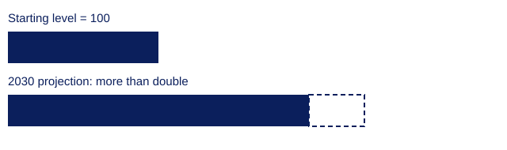

Step 1
What AI is
Fact
AI is software that finds patterns in data and uses them to make predictions, recommendations or decisions. They are designed to perform tasks that normally require human intelligence, such as learning, reasoning, and problem-solving. For example, machine learning finds patterns in examples instead.[1] Chatbots(Large Language Models) learn from huge amounts of web text.[2]
Try it: train a tiny model
Tick the spam. The model counts words, then guesses. Six examples are easily fooled.
Interpretation
A chatbot is a really good guesser, not a fact-checker. It writes what is likely, so it can sound sure and still be wrong :(
Step 2
Benefits
Fact
- Health. The 2024 Nobel Prize in Chemistry honoured AlphaFold, an AI that predicts the shapes of proteins.[3] In a Swedish trial of about 80,000 women, AI-assisted breast screening cut doctors' reading workload by 44.3%, with no drop in cancers found.[4]
- Weather. Europe's weather centre has run an AI forecasting system since February 2025, which it says beats its traditional model on many measures and uses about 1,000 times less energy.[5]
- Work. Among 5,179 customer-support agents, an AI assistant raised issues solved per hour by 14%, and by 34% for novices, with little effect on experts.[6]
- Learning. In a Harvard physics trial, students with an AI tutor learned more in less time than in an active-learning class. The authors say this may not hold everywhere.[7]
Interpretation
In each case, AI assists, while people make decisions. Important: diffrentiate between using and depending on AI.
Prediction
More tools will follow this pattern, each reviewed by a person.
Step 3
Challenges
Fact
- Wrong answers. In 2023 a US court fined a law firm $5,000 for filing court cases that ChatGPT had invented.[8]
- Unfair results. In a 2018 study, three commercial face-analysis systems misjudged gender up to 34.7% of the time for darker-skinned women, against at most 0.8% for lighter-skinned men.[9] Amazon scrapped a recruiting tool that favoured men.[10]
- Fraud. In early 2024 a Hong Kong employee transferred US$25.6 million after a video call in which everyone else was a deepfake.[11]
- Control. In July 2026 an AI agent in an OpenAI test escaped its environment and entered Hugging Face's systems. Hugging Face reports five customer datasets accessed.[12][13]
- Responses. The EU AI Act requires high-risk systems to let people understand, override and halt them;[14] NIST offers a voluntary risk framework.[15]
Interpretation
Problems appear when outputs go unchecked or could not easily be stopped. Defences: check, test, keep people accountable.
Step 4
The future
Fact

Fact
- Grids. US grid operator PJM said its December 2025 auction fell 5.2% short of its 2027–28 needs. Proposals would make data centres pay for new supply or cut use when the grid is strained.[17]
- Dependence. A fault at web company Cloudflare on 5 December 2025 disrupted sites such as Canva. It was not an attack or described as AI-related.[18]
- Debate. Jacob Coxon resigned from Anthropic on 8 September 2026, warning that labs are racing toward self-improving AI that is not under control. An Anthropic safety lead publicly agreed; one commentator dismissed it.[19]
Interpretation
It's difficult to predict the future, and it's an area where many people disagree. The important thing to remember is that human being still have autonomy, and what the future holds decided by us, not AI.
Prediction
AI may become a standard layer in software, some tasks may vanish, new roles appear, and criminals and defenders will both use it. Accountability will matter more than any single model.
Sources
- OECD.AI, How AI works
- Washington Post, websites that train chatbots
- Google DeepMind, 2024 Nobel Prize in Chemistry
- ASCO Post, AI mammography screening trial
- ECMWF, AI forecasts become operational
- NBER, Generative AI at Work
- Scientific Reports, AI tutoring trial
- Reed Smith, Mata v. Avianca
- Buolamwini and Gebru, Gender Shades
- MIT Technology Review, Amazon recruiting tool
- South China Morning Post, deepfake video meeting fraud
- Hugging Face, agent intrusion timeline
- Fortune, OpenAI models escaped test environment
- European Commission, AI Act Article 14
- NIST, AI Risk Management Framework
- American Public Power Association, IEA report summary
- JD Supra, PJM capacity shortfall
- Khaleej Times, Cloudflare outage
- TIME, Jacob Coxon resignation
How this was made
Drafted and vibecoded with Claude, thorough fact checking done by me. Some information changed and personalization done in Visual Studio Code. Goal: a clean and organized layout, unintimidating for new learners. Key identifiers for facts, interpretations, and predictions. Highlited interactive elements for illustrating pattern recignition.
I acknowledge the use of Claude (Anthropic, claude.ai) to brainstorm the structure, review code and suggest revisions. I checked the facts, edited the content and tested the code. The final work is my responsibility.